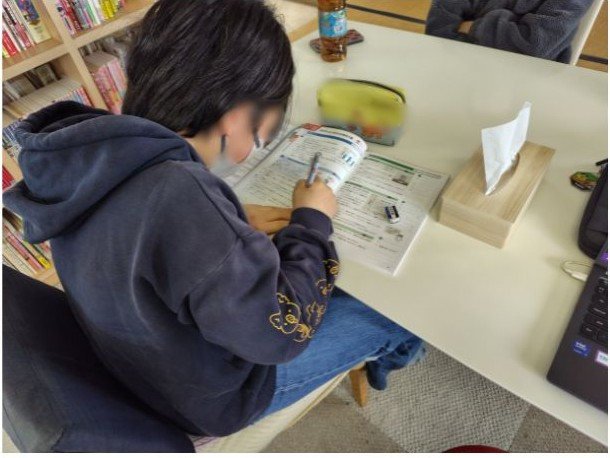

普段の1日の様子です。
みんな、自分のペースで来所し、自分のペースで帰宅します。
※体調や活動内容に合わせてゆるやかに調整します。
- 10:001日のスタート・勉強の時間
その日1日の学習予定を立て、勉強を開始します。休憩も挟みながら、集中して取り組みます。
受験生はとくに、進路のことも考え、長期的なプランをスタッフと一緒に考えます。
- 12:00お昼ごはん
お弁当を食べます。近所にスーパーやお弁当屋さんがあるので、スタッフと一緒に買いに行くこともできます。
- 13:00体験活動（自由時間）
友達と一緒にゲームをしたり、トランプをしたり…
思い思いに好きな時間を過ごします。 - 14:00天気が良ければ公園へ！
公園へ行ったり、みんなで遊んですごしたりしています。
お友達と一緒に何かをする時間です。月に1回は調理実習をします！ - 16:45おそうじの時間
みんなで掃除の時間です。場所はくじ引きで決定します。教室を隅々まできれいにします。
- 17:00午後の勉強の時間
午後にも学習の時間を設定しています。学校の宿題のサポートなどをしています。この後の時間に行っている学習塾『志塾＠』でも、学習支援をしています。
- 18:00帰宅
放課後等デイサービス そらは、この時間で終わりです。水～金曜日には、18:30～学習塾『志塾＠』があります。